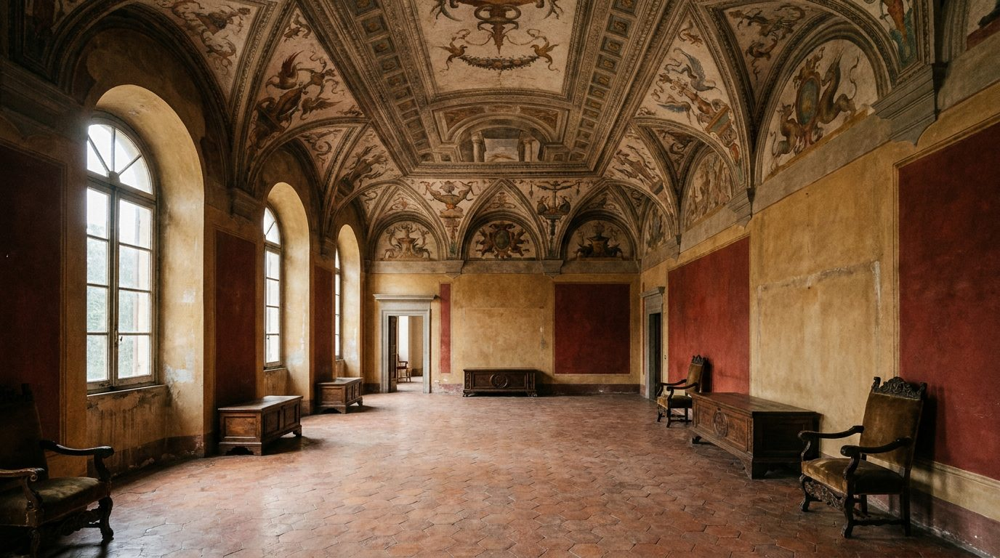

Atlante · IT-01 · Italia · Nord
Palazzo nobiliare cinquecentesco con saloni affrescati
Esempi · esterno e interno


Architettura · elementi riproducibili
- saloni di 60-120 mq, altezza 6-8 m, volte a botte o a padiglione interamente affrescate con quadrature e grottesche
- pareti a intonaco ocra/rosso pompeiano con cornici in stucco
- pavimento in lastroni di marmo policromo o seminato veneziano
- porte a due battenti alte 3,5-4 m
- finestre a tutto sesto con scuri in legno
- camino monumentale in pietra
- Proporzione chiave: sviluppo verticale doppio rispetto alla larghezza.
Luce
laterale radente da finestre alte (est o ovest), 30-40° di incidenza, ombre lunghe sul pavimento; mai luce frontale piatta.
Prompt di generazione (EN)
Italian Renaissance palazzo salon, 7 m frescoed barrel vault with grotesque painting, ochre and Pompeian-red plaster walls, polychrome marble slab floor, 4 m double doors, tall arched windows with wooden shutters, raking side light from the left, wide 28 mm shot at 1.4 m height, rich saturated colour grade.